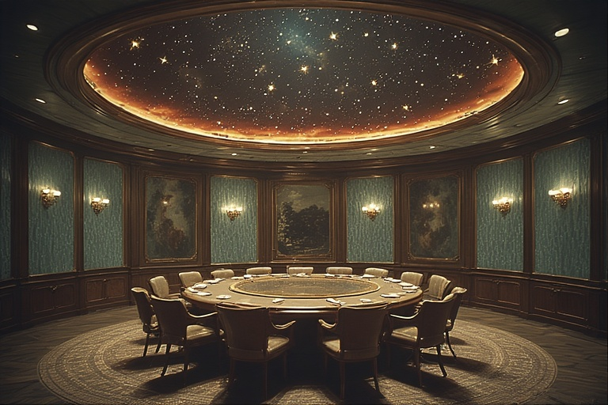
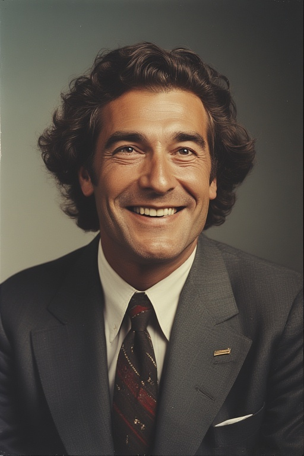
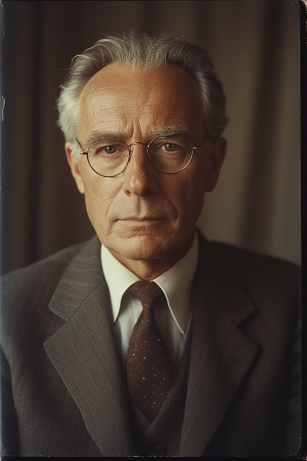
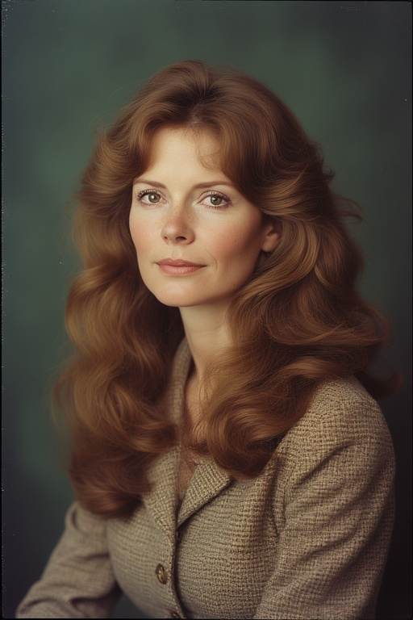
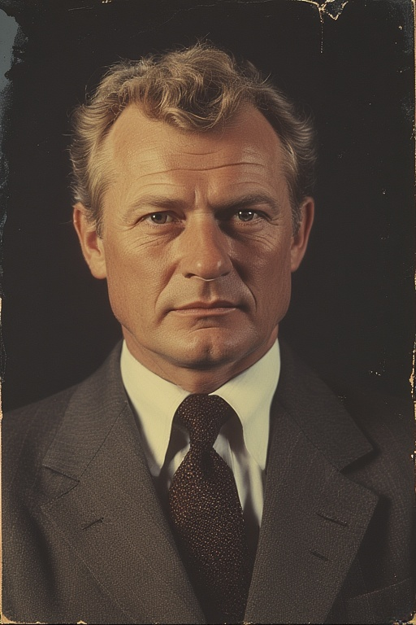

sous Anton Vorne
Cabinet du président

Nature et Vocation Institutionnelle
Le Cabinet Présidentiel constitue l'organe d'exécution politique immédiat du Chef de l'État. Contrairement aux administrations centrales régies par l'avancement méritocratique, les membres du Cabinet sont nommés par décret discrétionnaire du Président de la République, sur le seul critère de la confiance absolue et de la compétence éprouvée. Cette "Garde Rapprochée" n'a pas vocation à se substituer aux Ministères dans la gestion courante, mais agit comme l'interface exclusive entre la volonté politique du Président et la réalité technique de l'appareil d'État. Ils sont les garants de la loyauté de l'exécution administrative.
Une Composition Pluridisciplinaire
Afin d'appréhender la complexité des dossiers nationaux, le Cabinet est structuré en pôles d'expertise transversale. Il réunit des spécialistes issus de corps variés : ingénieurs des mines ; auditeurs financiers ; juristes constitutionnels et diplomates, choisis pour leur capacité à analyser les enjeux au-delà des simples données sectorielles. Cette diversité permet au Président de disposer d'une vision synthétique et critique, indépendante des prismes souvent corporatistes des Hauts Comités ministériels. Chaque conseiller est un généraliste de haut vol, capable de dialoguer d'égal à égal avec les techniciens des Ministères.
La Mission d'Audit et de Vérification
Dans un État où l'information est une ressource stratégique, le Cabinet exerce une prérogative fondamentale : le Droit de Vérification sur Pièces. Les conseillers présidentiels disposent d'un mandat permanent pour auditer les archives physiques et les registres comptables de l'ensemble des administrations. Cette procédure, essentielle à la sécurité de l'État, vise à s'assurer que les synthèses transmises par les Ministères au Palais Présidentiel reflètent avec exactitude la réalité du terrain et des stocks. Le Cabinet agit ainsi comme un filtre de vérité, prévenant toute rétention d'information administrative.
Le Pouvoir d'Arbitrage Législatif
Si le monopole de l'écriture des lois techniques appartient aux Ministères, le Cabinet détient le pouvoir décisif de l'opportunité. Aucun texte, décret ou projet de réforme ne peut être soumis à la signature du Président sans avoir été préalablement examiné, débattu et voté avec les membres du Cabinet. Ce filtre décisionnel est absolu : le Cabinet a toute autorité, par le biais du président, pour rejeter, suspendre ou renvoyer pour réécriture tout projet jugé inabouti ou contraire aux orientations du mandat. Ils sont les ultimes gardiens de la cohérence politique avant la promulgation.
Composition actuelle




M. Lior Danek
Secrétaire Général de la Présidence
Parcours : Diplômé de l'Université d'État
La collaboration entre Danek et Vorne ne date pas des palais officiels, mais remonte à quarante ans, sur les bancs de l'Université d'État, dans l'austérité des années d'études communes. Cette amitié, forgée dans l'effort et la solidarité étudiante, a donné naissance à un binôme indissociable. Lior Danek a accompagné chaque étape de l'ascension d'Anton Vorne, restant cet homme de confiance absolu capable de dire la vérité au Chef de l'État dans le huis clos du bureau, loin des courtisans.
En sa qualité de Secrétaire Général, M. Danek occupe une fonction centrale : il est le point de convergence de toutes les administrations. Connaissant intimement les rouages de l'État et surtout les hommes et les femmes qui les font tourner, il assure la fluidité de l'action présidentielle. Là où la complexité administrative pourrait créer de l'inertie ou des blocages, Lior Danek intervient pour rétablir le dialogue. Pragmatique, privilégiant le contact humain direct à la note de service impersonnelle, il est celui qui dénoue les crises logistiques et s'assure que les décisions du Cabinet sont appliquées sur le terrain avec célérité.
Enfin, Lior Danek est le maître des horloges du Palais. Il filtre les sollicitations, organise l'agenda du Président et protège ce dernier des tracasseries mineures, lui permettant de se consacrer entièrement aux grands dossiers stratégiques. Il est l'ombre bienveillante qui permet à la lumière présidentielle de briller sans interférences.
M. Gustav Hroll
Conseiller Spécial à la Stratégie et à l'Économie
Particularité : Doyen du Cabinet (75 ans) Distinction : Grand Croix de l'Ordre du Mérite Oslave
Gustav Hroll est plus qu'un conseiller : il est la mémoire vivante de notre administration. Seul membre du gouvernement à avoir servi l'État avant la période de transition, il incarne la continuité des institutions à travers les tempêtes de l'histoire.
Son nom reste à jamais gravé dans la légende nationale pour son rôle décisif lors de la "Grande Inflation". Alors simple haut-fonctionnaire au Trésor, il a eu le courage physique de s'opposer à la planche à billets, au prix de sa liberté personnelle, pour sauver l'épargne des Oslaves. Rappelé aux affaires lors de la reconstruction, il est l'architecte du "Franc Oslave Fort", monnaie stable et respectée qui garantit aujourd'hui le pouvoir d'achat des ménages.
Sa relation avec le Président Vorne est celle d'une transmission intellectuelle profonde. C'est Gustav Hroll qui, très tôt, a repéré le potentiel du jeune Anton Vorne, lui inculquant les principes de réalité qui guident aujourd'hui le mandat : « Gouverner, ce n'est pas promettre l'impossible, c'est garantir le nécessaire. » Au sein du Cabinet, il apporte la sagesse de l'expérience, tempérant les ardeurs technocratiques par le rappel constant des équilibres financiers fondamentaux.
Gustav Hroll est également une voix familière pour tous les citoyens. Chaque mardi soir, sur les ondes de la Radio Nationale, il anime la chronique "L'Heure des Comptes". Loin de la démagogie, il y explique avec une franchise parfois abrupte, mais toujours honnête, les mécanismes de notre économie. Il est celui qui rappelle que chaque denier public dépensé est le fruit du travail des Oslaves, et qu'il doit être géré avec une économie d'avare pour le bien commun.
Mme Élise Montray
Conseillère à la Culture, à l'Éducation et à la Cohésion Nationale
Parcours : Agrégée de Lettres Modernes, Majore nationale du DGA (Promotion 1968)
Si le Président Vorne incarne l'État, Élise Montray en incarne l'Âme. Fille d'exploitants agricoles des Hauts-Plateaux, elle est la preuve vivante que l'ascenseur social oslave fonctionne pour qui a le goût de l'effort. Ayant obtenu un score parfait au Diplôme Général d'Aptitude, fait rarissime dans l'histoire de l'examen, elle a choisi l'enseignement universitaire en province plutôt que le prestige des chaires de la capitale, par fidélité à ses racines.
Son entrée en politique date du célèbre "Dialogue de Val-Gris" en 1979. Alors que le candidat Vorne visitait une région minière en difficulté, c'est Madame Montray qui, bravant le protocole, a su trouver les mots justes pour exprimer les attentes des familles rurales. Impressionné par cette éloquence sincère et sans artifice, le futur Président lui a immédiatement confié la mission de porter la parole des "oubliés" au sommet de l'État.
Refusant l'enfermement bureaucratique, elle consacre une partie significative de son emploi du temps aux déplacements non-officiels. Visitant écoles, dispensaires et foyers ruraux sans escorte, elle agit comme le baromètre sensible de la société oslave. Elle remonte au Président les réalités brutes du terrain, permettant d'ajuster l'action publique avant que l'incompréhension ne s'installe.
Face à la montée des influences culturelles standardisées venues de l'étranger, Élise Montray mène un combat ferme pour la préservation de l'identité oslave. Elle supervise les programmes éducatifs et culturels avec une obsession : s'assurer que notre jeunesse reste connectée à son histoire et à sa langue, rempart indispensable contre la dissolution des mœurs.
Colonel Stellan Krov
Chef de l'État-Major Particulier du Président Directeur de la Coordination du Renseignement Intérieur
Arme d'origine : Infanterie de Marine. Distinction : Croix de la Valeur Oslave (avec Palmes)
Figure respectée de l'institution militaire, le Colonel Stellan Krov a forgé sa légende lors de la Campagne des Archipels. Alors jeune capitaine, il s'est illustré lors des opérations de désengagement en tenant une position portuaire encerclée durant trois semaines, refusant de céder du terrain tant que l'évacuation des civils et des blessés n'était pas achevée .
C'est durant ces heures sombres qu'il collabore pour la première fois avec Anton Vorne, alors administrateur logistique, qui parviendra à briser le blocus pour rapatrier le contingent. De cette épreuve commune est née une confiance absolue et une vision partagée : l'ordre et le dévouement sont les seules réponses au chaos. Il fut nommé Chef de l'État-Major Particulier dès l'investiture du Président.
Homme de terrain peu enclin aux mondanités, le Colonel Krov incarne la rigueur spartiate. Pour lui, la sécurité de l'Oslavie ne se négocie pas, elle se construit jour après jour par une vigilance de chaque instant. Sous sa direction, le Renseignement Intérieur s'est modernisé, axant sa doctrine sur la prévention active des troubles et la neutralisation des facteurs d'instabilité avant qu'ils ne menacent la paix civile.
Mme Katerina Sorel
Conseillère aux Affaires Extérieures et au Commerce
Date d'entrée au Cabinet : Novembre 1984 (Naturalisée par Décret en Juin 1983) Spécialité : Diplomatie Économique et Négociation Stratégique
Ancienne diplomate de carrière au sein des instances de l'union régionale, Madame Katerina Sorel a rejoint la République d'Oslavie au terme de la crise diplomatique d'octobre 1982. Refusant de se soumettre à l'arbitraire politique qui frappait alors son pays d'origine, elle a sollicité la protection du Second État.
Cet événement a donné lieu à une décision historique du Président Vorne, réaffirmant l'indépendance totale de notre nation face aux pressions frontalières. En lui accordant l'asile puis la citoyenneté, le Chef de l'État a posé un principe immuable : "L'Oslavie ne livre pas la compétence à l'arbitraire". Katerina Sorel sert désormais le drapeau qui l'a protégée avec une loyauté exclusive.
Si son parcours ne suit pas la voie classique du Diplôme Général d'Aptitude (DGA), l'intégration de Madame Sorel au sein de la "Garde Rapprochée" répond à un impératif de pragmatisme économique. Sa connaissance intime des marchés étrangers et des circuits financiers internationaux offre au Cabinet une perspective technique indispensable, complémentaire à la rigueur administrative de nos hauts fonctionnaires.